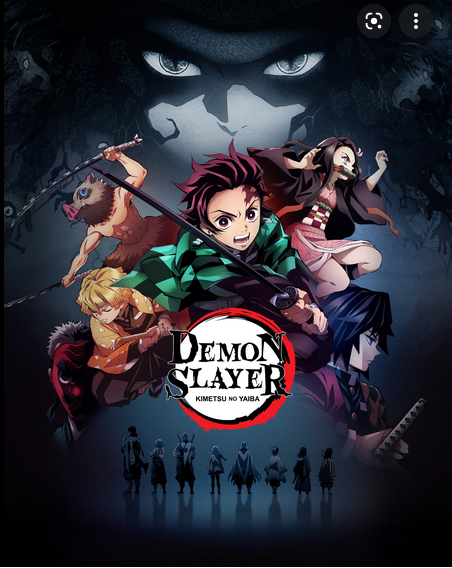

Kimetsu no Yaiba - Demon Slayer
Depois que um ataque demoníaco deixa sua família morta e sua irmã amaldiçoada, Tanjiro embarca em uma jornada perigosa para encontrar uma cura e vingar aqueles que ele perdeu.
Depois que um ataque demoníaco deixa sua família morta e sua irmã amaldiçoada, Tanjiro embarca em uma jornada perigosa para encontrar uma cura e vingar aqueles que ele perdeu.
Além da história do Mugen Train, a segunda temporada de Demon Slayer conta a luta de Tanjiro e seus amigos contra a Lua Superior número 6, com a ajuda do Hashira do Som, Tengen Uzui, no Distrito do Entretimento (famoso “Bairro da Luz Vermelha”).